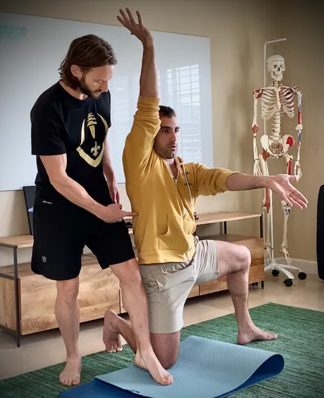

B348 · How My Self-Care Bill Dropped 40%
Hi {first_name},
Yup, 40%!
Crazy right?
Those who know me, are well aware that for a long time (especially when I was competing regularly), the majority of my funds would go to: quality food, hiring great coaches, and self-care to aid in recovery.
When competing, with such high training volumes, and at times having to push into the "red zone" to prepare for 10 minutes, continuous Clean and Jerks with double 72lb kettlebells (without setting them down), there were times that my body would “feel” it.
And that wasn't always fun.
To help combat this, I would often hop in a float tank, get massage therapy, acupuncture, chiropractic adjustments, neurosomatic therapy, ice baths, sauna, and more - all so that I could offset the stresses hard training would put on my body.
Whether you’re competing as an athlete or not, what is important is that YOU become your own best therapist.
For me, when I added ELDOA strengthening exercises to my program, on top of healthy living practices, I found that my self-care bill dropped approximately 40%!
I can tell you from first-hand experience that seeing this was incredibly empowering.
I was able to gain more control over my healing and recovery.

One of the best part I like about the ELDOAs are that they only take one minute each to do.
And even if all you do is one each day, over time, this can have a significant positive impact on your health.
This Saturday, I am STOKED to bring in good friend Justin Brien to teach an ELDOA Virtual Workshop and Workout exclusively for my community.
And it’s only $97.
Click here to learn more about this 90 minute workshop on 2/20, you won’t regret it.
Best,
|